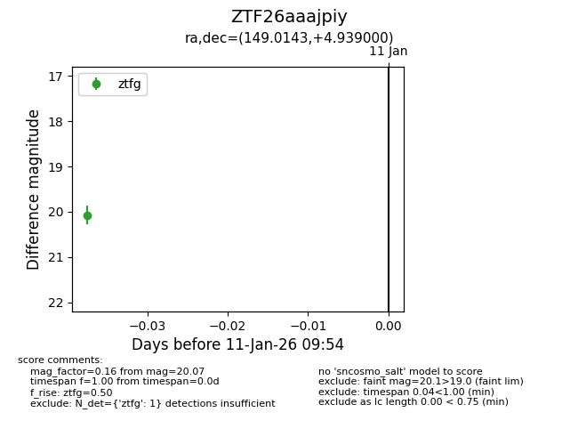
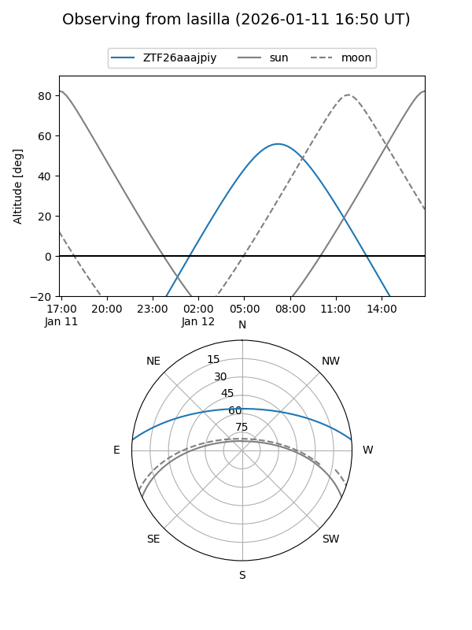
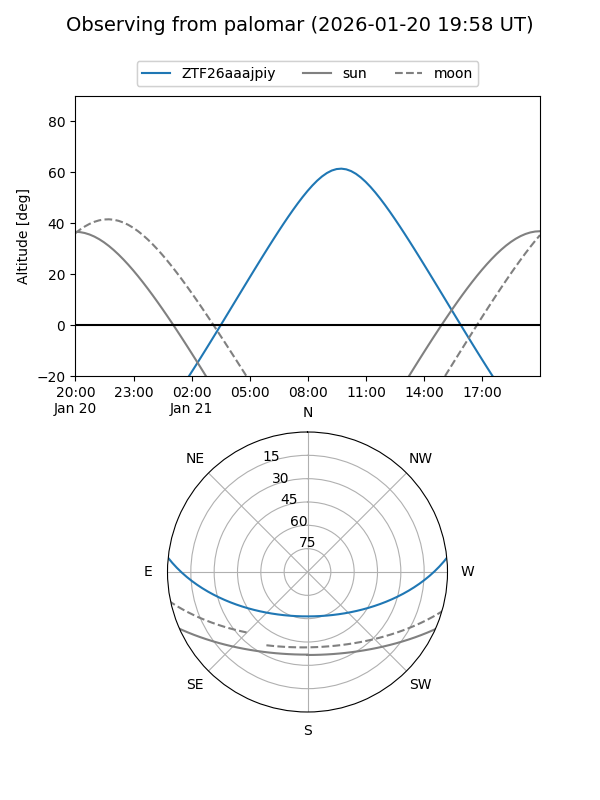
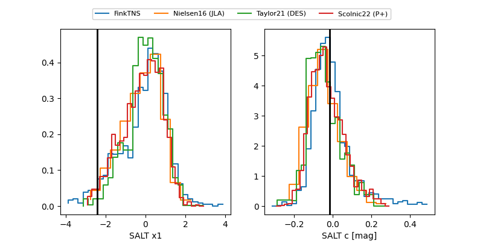

ZTF26aaajpiy
Target ZTF26aaajpiy at 2026-01-13 10:00
Aliases and brokers:
FINK: link
Lasair: link
ALeRCE: link
alt names
ZTF26aaajpiy (ztf,fink_ztf)
Coordinates:
equatorial (ra, dec) = 149.0143,+4.93900
equatorial (HMS+DMS) = 09:56:03.44,+04:56:20.40
galactic (l, b) = (232.9192,+42.74580)
Flags:
Photometry:
last ztfg=20.07
1 ztfg detections
Lightcurve

Visibility


Additional plots
